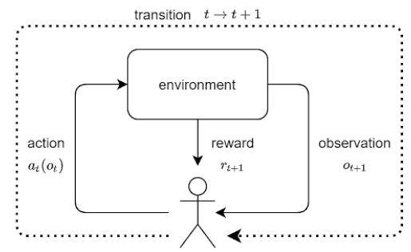

Theorie und Anwendung

Funktionsprinzip Reinforcement Learning
Neuronale Netze bestehen aus Neuronen und deren Verbindungen/Kanten. Je häufiger die Verbindungen genutzt werden, desto höher die Kantengewichte.

Theorie für das Finden der schnellsten Strecke
Während der Simulation wird manuell die Entropie / die mögliche maximale Änderung der Kantengewichte erhöht, um zu vermeiden, dass sich die KI auf das lokale Minimum “festfährt“ und das globale Minimum finden kann.

Methodik von TMRL
TMRL erwartet vom Entwickler eine vorge-fahrene Strecke, um an dieser den Trainer orientieren zu können. Dies bedeutet, dass bei dieser Aufzeichnung der Demofahrt (“Demo trajectory“) in gleichem Abstand Strecken-punkte erfasst werden (“equally spaced points“). Je höher die Anzahl der erreichten Punkte während einer Fahrt des Workers ist, desto mehr belohnt dies der Trainer.